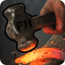

This addon is best enjoyed if you do not clear your browser data regularly, as it saves game
data locally, so on your device only, and has a lot of settings that would be reset everytime you do
so.
That being said: Clearing only your cache is fine. Data is stored in
a local database (IndexedDB) and localStorage, not in the cache.
You can also save your data to your computer before deleting any browser data in Settings and reimport it afterwards!
No data is sent to external websites.
You can use some Markdown.
Pinging custom groups or users can be achieved by their ID. To be able to see IDs, enable developer mode in
your Discord settings.
User ping syntax:
<@303034383893938393>
Group ping syntax:
<@&3434373535323434323>
For timestamp syntax look here
Create an entry with a title and a date in the Alerts
module
and hit the Preview button.
If nothing happens, notifications are probably not allowed in your OS (Windows/Mac etc) or in your browser.
Check those settings.